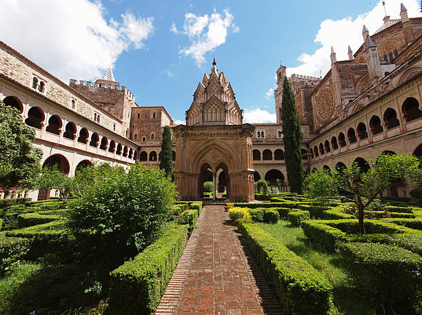

Disfruta cada rincón de Extremadura
 Ver rutas recomendadasPor qué viajar a Extremadura
Extremadura es un destino perfecto para combinar ciudades históricas, pueblos con encanto, naturaleza en valles y gargantas, y una gastronomía basada en productos de la dehesa.
Experiencias destacadas en tu viaje
- Recorrer localidades imprescindibles como Cáceres, Mérida, Plasencia, Trujillo, Badajoz y Zafra.
- Disfrutar de rutas por el Valle del Jerte, La Vera y otras comarcas llenas de senderos y piscinas naturales.
- Vivir actividades de ocio como el senderismo, la observación de aves o el astroturismo bajo cielos estrellados.
- Probar platos típicos en restaurantes de referencia, desde alta cocina hasta tabernas tradicionales.
Localidades que no te puedes perder en tu viaje Extremadura
Seguir leyendo…
Su ciudad monumental, declarada Patrimonio de la Humanidad, conserva palacios, torres y plazas medievales perfectas para un paseo histórico.
Seguir leyendo…
La antigua Emerita Augusta reúne teatro romano, anfiteatro y puente sobre el Guadiana, uno de los conjuntos arqueológicos más importantes de España.
Seguir leyendo…
Famoso por los cerezos en flor, el valle ofrece gargantas, cascadas y rutas de senderismo entre montaña y pueblos con encanto.
Seguir leyendo…
La comarca combina gargantas de agua cristalina, arquitectura popular de madera y piedra y productos tan típicos como el pimentón de La Vera.
Seguir leyendo…
Ciudad amurallada junto al río Jerte, con dos, murallas y plazas animadas, ideal para combinar patrimonio y naturaleza cercana.
Seguir leyendo…
Su Plaza Mayor porticada y el castillo en lo alto del cerro lo convierten en uno de los conjuntos monumentales más fotogénicos de Extremadura.
Seguir leyendo…
La Alcazaba, el casco antiguo y los paseos junto al Guadiana permiten descubrir una ciudad fronteriza con mucha historia y ambiente.
Seguir leyendo…
Conocida como la “Sevilla chica”, destaca por sus plazas porticadas, el castillo y su relación con las rutas de vino de Tierra de Barros.
Actividades de ocio en Extremadura
Además de visitar ciudades y pueblos, Extremadura ofrece muchas actividades de ocio en plena naturaleza.
Seguir leyendo…
La región cuenta con numerosas rutas señalizadas y antiguas vías ferroviarias convertidas en Vías Verdes, ideales para caminar o ir en bicicleta entre paisajes protegidos.
Seguir leyendo…
En valles como el Jerte, La Vera o el Ambroz encontrarás gargantas, cascadas y pozas naturales perfectas para refrescarte en verano.
Seguir leyendo…
Parques como Monfragüe y otras zonas protegidas son un paraíso para el birdwatching, con buitres, cigüeñas negras y otros grandes rapaces.
Seguir leyendo…
Extremadura cuenta con destinos Starlight y miradores nocturnos donde disfrutar de cielos limpios, rutas guiadas y actividades astronómicas.
Top 10 restaurantes en Extremadura
Selección de restaurantes recomendados para descubrir la gastronomía extremeña, desde alta cocina hasta tabernas con productos de la dehesa.
-
1
Restaurante Atrio (Cáceres)
Dirección: Plaza de San Mateo, 1, 10003 Cáceres
Teléfono: +34 927 21 88 82
Web: restauranteatrio.comRestaurante de alta cocina con tres estrellas Michelin, especializado en reinterpretar productos de la dehesa como el cerdo ibérico, quesos y caza.
-
2
Versátil (Zarza de Granadilla)
Dirección: Plaza de España, 16, 10710 Zarza de Granadilla (Cáceres)
Teléfono: +34 927 48 60 16
Web: restauranteversatil.comCocina creativa con una estrella Michelin que mezcla tradición extremeña y técnicas modernas, con menús degustación muy equilibrados.
-
3
Borona Bistró (Cáceres)
Dirección: C. Gral. Ezponda, 3, 10003 Cáceres
Teléfono: +34 927 23 45 67
Web: boronabistro.comBistró moderno que ofrece versiones actualizadas de platos extremeños, con especial atención al producto local y maridajes de vino.
-
4
Los Mundos de Sancho (Zafra)
Dirección: Plaza Grande, 7, 06300 Zafra (Badajoz)
Teléfono: +34 924 55 12 34Terraza muy cuidada en la Plaza Grande, con cocina tradicional y raciones para compartir, ideal para probar quesos y carnes de la zona.
-
5
Alberca (Trujillo)
Dirección: C. Tiendas, 7, 10200 Trujillo (Cáceres)
Teléfono: +34 927 32 11 11Restaurante recomendado por guías gastronómicas, que combina platos de caza, productos de la dehesa y una carta de vinos muy cuidada.
-
6
Miga (Cáceres)
Dirección: C. Margallo, 19, 10003 Cáceres
Teléfono: +34 927 22 33 44Propuesta contemporánea centrada en producto estacional, con menús cortos y platos pensados para compartir en un ambiente moderno.
-
7
Siente la Dehesa (Badajoz)
Dirección: Av. Elvas, s/n, 06006 Badajoz
Teléfono: +34 924 27 89 00Especializado en carnes de la dehesa y productos ibéricos, con elaboraciones cuidadas y una carta muy centrada en la materia prima.
-
8
La Bodeguita (Trujillo)
Dirección: Plaza Mayor, 4, 10200 Trujillo (Cáceres)
Teléfono: +34 927 32 22 55Taberna clásica en plena Plaza Mayor, famosa por sus raciones, platos de cuchara y asados para compartir en grupo.
-
9
El Molino (Madrigal de la Vera)
Dirección: C. Real, 45, 10480 Madrigal de la Vera (Cáceres)
Teléfono: +34 927 56 78 90Restaurante de cocina actual en La Vera, que combina productos de huerta, carnes y pescados con guiños al pimentón de la zona.
-
10
Los Cazadores (Zafra)
Dirección: C. Sevilla, 25, 06300 Zafra (Badajoz)
Teléfono: +34 924 55 66 77Restaurante muy apreciado por su cocina casera, menús abundantes y platos de carne y guisos tradicionales extremeños.